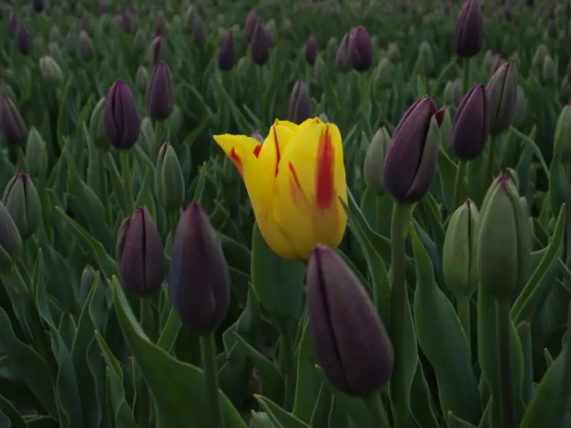
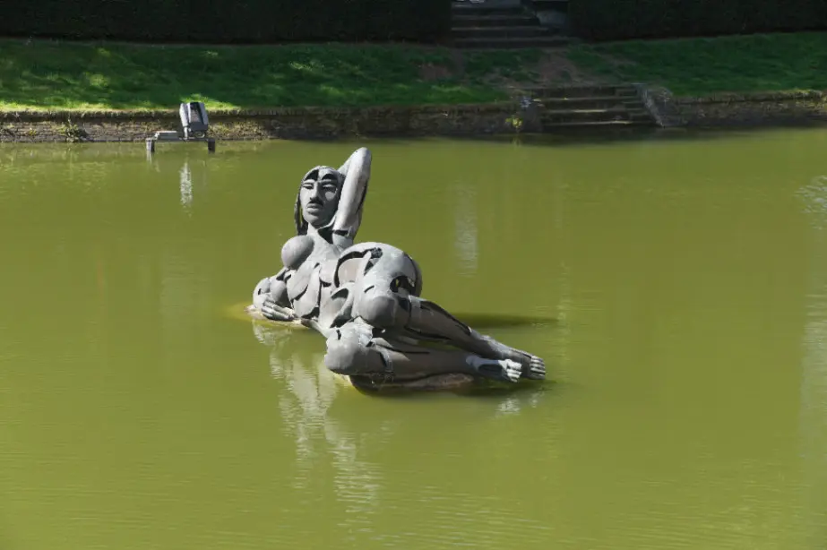
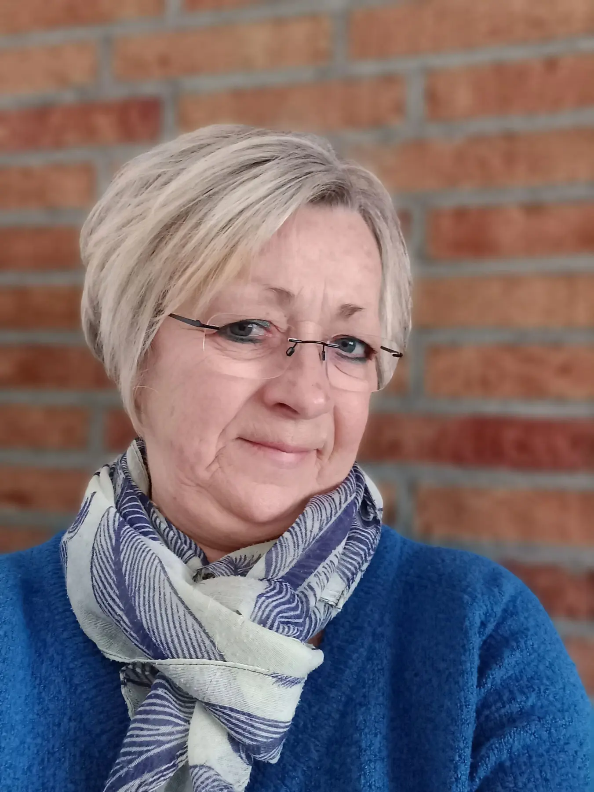
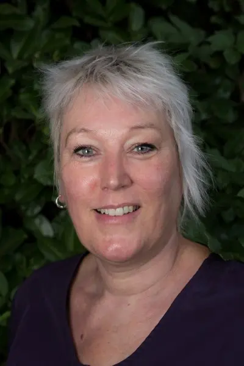
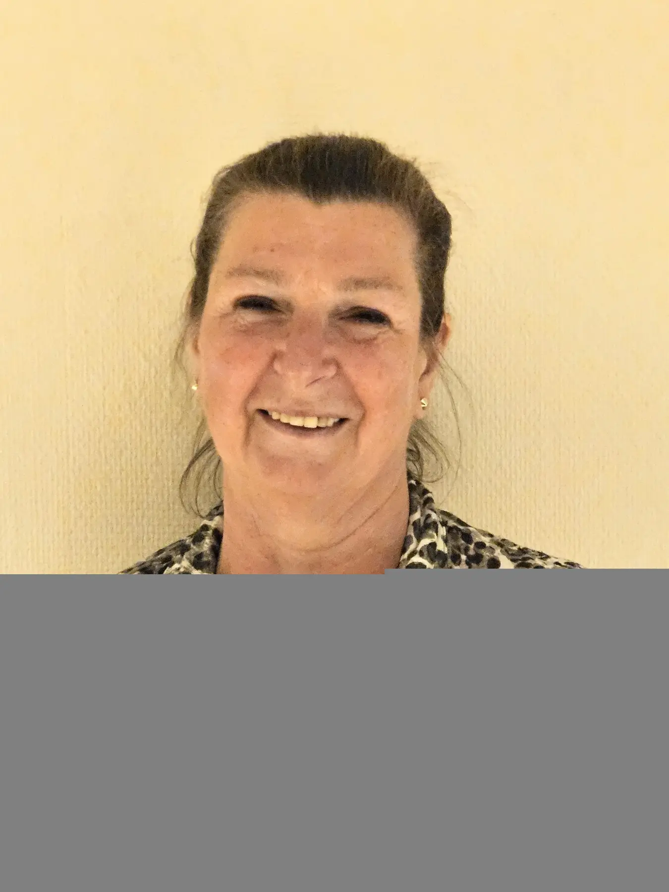
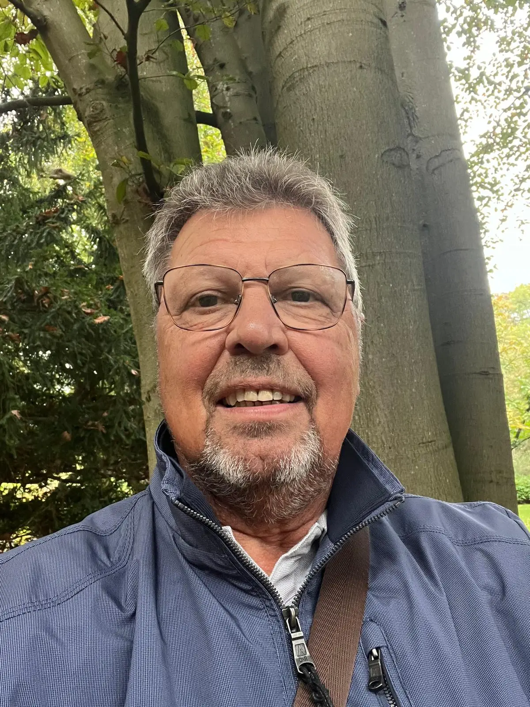

Onze foto’s en gedichten nog deze maand in Bravis
Tussen de ingang van de polikliniek en de hoofdingang is er licht en ruimte om de werken rustig te bekijken — en even stil te staan.
Lees het verhaalFotografie uit Nispen
Samen kijken, maken en groeien in fotografie.
Bekijk onze foto’sOnze blik
We zijn op een ontspannen en leuke manier met fotografie bezig. We delen ervaringen, motiveren elkaar en zetten ideeën uit de groep om in nieuwe thema’s en uitstapjes.
Zo groeien we samen — laagdrempelig, nieuwsgierig en met oog voor elkaars eigen stijl.
Ontmoet de groepUitgelicht thema
Van lijnenspel en Hollandse luchten tot techniek en stillevens.
Ontdek alle thema’sOp pad & te zien
Tussen de ingang van de polikliniek en de hoofdingang is er licht en ruimte om de werken rustig te bekijken — en even stil te staan.
Lees het verhaal

De makers
We leren van elkaar zonder dat iedereen hetzelfde hoeft te zien. Juist het verschil maakt de groep interessant.
Maak kennis met alle leden



Van elkaar leren
Nieuwsgierig?
Wil je meer weten over de fotogroep, een activiteit of onze exposities? We horen graag van je.
Stuur een bericht